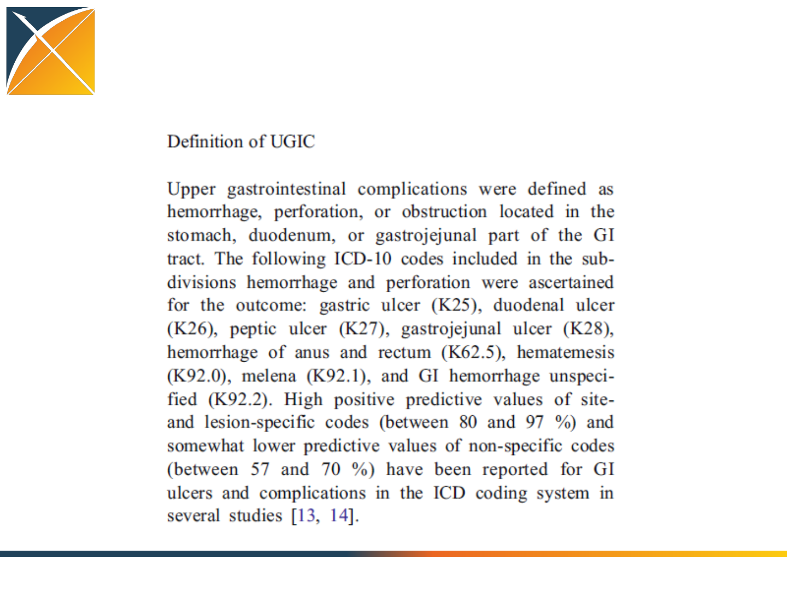

Study designer track:
Deep dive into cohort study
design using ATLAS
A standardized process for evidence
generation and dissemination
Our current focus
1. Question
2. Review
3. Design
5. Execute
6. Evaluate
4.
Publish
Protocol
7. Synthesize
What is a protocol?
“In the natural sciences a protocol is a predefined
written procedural method in the design and
implementation of experiments.
Protocols are written whenever it is desirable to
standardize a laboratory method to ensure
successful replication of results by others in the
same laboratory or by other laboratories.
Detailed protocols also facilitate the assessment of
results through peer review.”
https://en.wikipedia.org/wiki/Protocol_(science)

What should a protocol be in
epidemiology?
“The study protocol is a core document of a
study. A protocol should be drafted as one of the
first steps in any research project. The final
version must precisely describe everything
being done in the study so that the study can
be reproduced. ”
-ENCePP Guide on Methodological
Standards in Pharmacoepidemiology
http://www.encepp.eu/standards_and_guidances/methodologicalGuide1.shtml

Analogy for a retrospective analysis of
observational healthcare data
•Assembly Instructions:
–Initial parts already exist
–Defined step-by-step procedure can be followed
–If followed correctly, you should always get the
same output
Lessons from IKEA:
making effective assembly instructions
http://www.ikea.com/us/en/assembly_instructions/kallax-shelf-unit__AA-1055145-3_pub.pdf
Protocol / assembly instructions:
initial warnings
•What warnings should
communicated in your
epidemiology protocol, prior
to execution of the analysis?
http://www.ikea.com/us/en/assembly_instructions/kallax-shelf-unit__AA-1055145-3_pub.pdf
Protocol / assembly instructions:
required tools
•What tools do you need to have access to in order to
properly complete the analysis?
http://www.ikea.com/us/en/assembly_instructions/kallax-shelf-unit__AA-1055145-3_pub.pdf
Protocol / assembly instructions:
required expertise
•Study design should not be a one-person effort
•Anyone in any role can contribute an initial research question…
•…but it’s unlikely that anyone has all of the necessary expertise to design and
implement a study to answer that question
–Therapeutic area and clinical domain knowledge
–Understanding how the clinical phenomena manifests in the health care system and data
capture processes
–Working competency with the observational databases and source vocabularies
–Expertise with standardized analytics tools to design and implement analyses
•Protocol development should be shared collaboration activity
http://www.ikea.com/us/en/assembly_instructions/kallax-shelf-unit__AA-1055145-3_pub.pdf
Protocol / assembly instructions:
required expertise
•A protocol should be a complete specification of all
procedures to be executed, which is pre-defined and
documented prior to study execution
•There should be a pre-defined process for how to reconcile
any ambiguities identified during implementation
•All resolutions should be documented as a protocol
amendment
http://www.ikea.com/us/en/assembly_instructions/kallax-shelf-unit__AA-1055145-3_pub.pdf
Protocol / assembly instructions:
complete inventory of initial inputs
•IKEA doesn’t just say: ‘use
some particle board and a few
screws’….so we shouldn’t just
say: ‘use an administrative
claims database’
•Full specification requires
documenting scope of source
data used (release date, scope
of calendar time and
population), version of CDM
and ETL process, version of
vocabulary
http://www.ikea.com/us/en/assembly_instructions/kallax-shelf-unit__AA-1055145-3_pub.pdf
Protocol / assembly instructions:
intended use for the final outputs
•It is important to decide
upfront how the evidence
generated it going to be
used once completed
–What decision is being made?
–Who is the decision-maker?
–How can the evidence this
study generates inform the
decision?
http://www.ikea.com/us/en/assembly_instructions/kallax-shelf-unit__AA-1055145-3_pub.pdf

Observational data analysis is a science,
not an art
•If you want to generate reliable evidence from
observational healthcare databases to
meaningfully inform medical decision making,
you must apply a consistent, reproducible,
verifiable process that follows the scientific
method
• If you are looking for ‘artistic’ opportunities:
–Propose interesting and clinically relevant questions to
answer
–Discover new data capture processes and incorporate
these elements into the OMOP common data model
–Design novel visualizations to more effectively
communicate the evidence generated
Replication of Garbe et al. using the
OHDSI framework
What is the design used by Garbe et al?
Input
parameter
Design
choice
Target cohort (T)
Celecoxib
new users
Comparator cohort
(C)
Traditional
non-steroid antiflammatory
drugs (NSAID) new users
Outcome cohort (O)
Upper gastrointestinal
complications
(UGIC)
Time
-at-risk
cohort start
cohort end
Model specification
1:1 propensity score
-matched
multivariable
conditional Poisson
regression

Garbe et al. description of cohort(s)
Garbe et al. replication:
Implementing the target cohort in ATLAS
Implementing the target cohort in ATLAS:
Defining the initial event
Ambiguities from publication which require detailed specification in a complete protocol:
1) What is the time period for exposure?
2) Does exposure need to be first time in history, or only require 12 months prior with
no exposure?
Implementing the target cohort in ATLAS:
Specifying initial event inclusion criteria
Ambiguities from publication which require detailed specification in a complete protocol:
1) Does ‘at least 12 months without any notation of NSAID use…during this period’ mean
no exposure any time in prior history or any time in last 12 months?
2) How do you define ‘diagnosis of cancer’?
Implementing the target cohort in ATLAS:
Select cohort exit criteria
Ambiguities from publication which require detailed specification in a complete protocol:
1) How is continuous exposure defined, such that one can determine a ‘discontinuation
or switch’?
2) How do we differentiate between ‘potential time-at-risk’ vs. ‘realized time-at-risk’ to
disentangle exposure cohort definition from analytic censoring strategy?
Implementing the target cohort in ATLAS:
Define ‘celecoxib’ concept set
•Use of OHDSI standardized vocabularies enables efficient definition of concept sets,
which can be fully expressed as all included concepts and included source codes
•Use of standardized vocabularies enables same definition to be applied across
different databases, even if those databases use different source coding

Implementing the target cohort in ATLAS:
Review ‘celecoxib’ included concepts
•RxNorm is a standard vocabulary to represent drugs
•Descendant concepts from RxNorm ingredient includes clinical drugs, branded drugs,
clinical/brand drug forms, and clinical/branded drug component
•RC: ‘record count’ = how often that standard concept appeared directly in a database
•DRC: ‘descendant record count’ = how often that standard concept or any of its
descendant concepts appeared in a database
Implementing the target cohort in ATLAS:
Review ‘celecoxib’ included source codes
•Many different source vocabularies used across various health systems are mapped
into one common reference standard used in OMOP Common Data Model (ex: NDC,
DPD, DA France, VA Product, GPI all mapped into RxNorm)
•By defining a concept set as one standard concept and including all descendants, the
definition includes 193 different standard concepts and 1,014 different source
vocabulary terms.
Implementing the target cohort in ATLAS:
Define ‘cancer’ concept set
•OHDSI standardized vocabularies allow for use of hierarchical structure contained
within vocabularies to define large sets of concepts using a small number of concepts
•Example: to define ‘all malignancies except skin cancer’, we select all ‘malignant
neoplastic disease’ with associated descendants, but exclude all descendants of both
‘squamous cell carcinoma’ and ‘malignant basal cell neoplasm of skin’
•Expansion of this expression defined by 3 concepts manifest as 3,567 distinct standard
concepts and 10,810 included source codes
Hands-on Exercise
Create a cohort definition to replicate the
comparator group used in Garbe et al.
1. Go to: http://www.ohdsi.org/redshift/atlas
2. Click on ‘Define a New Cohort’ button
3. Give your cohort a new name (ex. “OHDSI tutorial Garbe
comparator replication by Patrick Ryan”)
4. On ‘Definition’ tab, define cohort entry criteria (initial
events and all inclusion criteria) and cohort exit criteria
5. Hit ‘Save’ button beside the cohort definition name
6. Go to ‘Generation’ tab, and click ‘Generate’ button beside
whichever database(s) you’d like to explore

Garbe et al. replication:
Implementing the outcome in ATLAS
Garbe et al. replication:
Implementing the outcome cohort in ATLAS
Ambiguities from publication which require detailed specification in a complete protocol:
1) How do we determine distinct events (and not misclassification continuation of care
for prior episode as incident occurrence)?
2) How does ‘validation’ of ICD9 codes in Italy and Canada improve your confidence in
accuracy of ICD10 codes in Germany?
Implementing the outcome cohort in ATLAS:
Define ‘UGIC’ concept set
•Standard concept set can be constructed that yields a specific set of source codes
•Standard concepts can then be applied to other databases that use different source codes
Implementing the outcome cohort in ATLAS:
Define ‘UGIC’ concept set
•47 distinct ICD10CM codes map to standard concepts
•Complete listing required for full transparency, rather than assuming user knows
subcodes within hierarchy (e.g. NEVER WRITE ICD9 ###.*)

Implementing the outcome cohort in ATLAS:
Define ‘UGIC’ concept set
•47 distinct ICD10CM codes map to standard concepts…
•…but so do 126 ICD9CM codes, 157 Read codes, 27 OXMIS codes, etc.
•Using one standard concept definition allows consistent application of clinical construct
across different databases, even if they use different source vocabularies
•Cross-database analyses require review of standard concepts and mapped source codes
Garbe et al. replication:
Designing the statistical analysis in ATLAS
Garbe et al. replication:
Designing the statistical analysis in ATLAS
The choice of the outcome model
defines your research question
Logistic
regression
Poisson
regression
Cox proportional
hazards
How the
outcome
cohort is
used
Binary
classifier
of presence/
absence of
outcome during
the fixed time
-at-
risk period
Count the number
of occurrences
of
outcomes during
time
-at-risk,
Compute time
-to-event
from time
-at-risk start
until earliest of first
occurrence of outcome
or time
-at-risk end, and
track the censoring event
(outcome or no
outcome)
‘Risk’ metric
Odds
ratio
Rate
ratio
Hazards ratio
Key
model
assumptions
Constant
response in fixed
window
Outcomes
follow
Poisson
distribution
Proportionality
–
constant relative hazard
Cohort restriction decisions
Cohort restriction in comparative
cohort analyses
Initial target cohort
Qualifying
target cohort
Analytic
target
cohort
Initial comparator cohort
Qualifying
comparator cohort
Analytic
comparator
cohort
Two forms of attrition to consider as
diagnostics
1. Initial cohort Qualifying cohort: (independent from analysis)
How did additional inclusion criteria impact the proportion and
composition of your cohort?
Graham replication: comparator cohort – warfarin new users
Two forms of attrition to consider as
diagnostics
2. Qualifying cohort Analytic cohort
How did analysis restrictions
impact the proportion and
composition of your cohort?
Covariate adjustment strategy

Propensity score introduction
•e(x) = Pr(Z=1|x)
–Z is treatment assignment
–x is a set of all covariates at the time of treatment
assignment
•Propensity score = probability of belonging to the
target cohort vs. the comparator cohort, given the
baseline covariates
•Propensity score can be used as a ‘balancing score’: if
the two cohorts have similar propensity score
distribution, then the distribution of covariates should
be the similar (need to perform diagnostic to check)
Rubin Biometrika 1983
Intuition around propensity score
balance
Schneeweiss. PDS 2011

“Five reasons to use propensity score in
pharmacoepidemiology”
•Theoretical advantages
–Confounding by indication is the primary threat to validity, PS focuses
directly on indications for use and non-use of drug under study
•Value of propensity scores for matching or trimming the population
–Eliminate ‘uncomparable’ controls without assumptions of linear
relationship between PS and outcome
•Improved estimation with few outcomes
–PS allows matching on one scalar value rather than needing degrees of
freedom for all covariates
•Propensity score by treatment interactions
–PS enables exploration of patient-level heterogeneity in response
•Propensity score calibration to correct for measurement error
Glynn et al, BCPT 2006

Covariate selection in propensity score
modeling
•What covariates should you include in propensity score
model?
–Variables that predict exposure status (Rubin Biometrika
1983)
–Variables that are confounders, associated with both
exposure and outcome (Schneeweiss Epidemiology 2009)
–Variables that are associated with outcomes (Brookhart
AJE 2006)
•Propensity score tends to balance distributions of
covariates used in estimation
–The method does NOTHING for unmeasured confounding
or other covariates not entered into model

My perspective on covariate selection
•Choosing the ‘right’ variables in the model is an empirical question.
It is the set of variables that yield the unbiased estimate of the
effect of interest.
•The goal of fitting a propensity score is to predict treatment
assignment, so a reasonable objective function is to maximize
discrimination (AUC)
•Large-scale regression, using L1 regularization (LASSO), that uses a
large set of potential covariates will often outperform a traditional
regression that uses a small subset of those covariates
–Regularization reduces risk of model overfitting, by only selecting the
covariates that have an adequate information component
–Covariates that aren’t used are effectively ‘unmeasured’
Covariate selection in ATLAS
Design choice: propensity score
trimming by percentile
•Simulation studies suggest PS trimming may eliminate
confounding due to extreme patients with ‘last resort
treatment’ or ‘treatment withhold’
•The subpopulation you select may be systematically different
from the overall population
Sturmer AJE 2010
Propensity score trimming by
percentile in ATLAS
Design choice: propensity score
trimming by equipoise
•Preference score (PREF) = propensity score, weighted for the imbalance in
the prevalence of the target vs. comparator cohort
•PREF= 0.5 means equally likely to belong to either cohort
•Trimming to PREF near 0.5 restricts to persons who had reasonable
probability of assignment in both groups (‘near clinical equipoise’)
Idea derived from Walker CER 2013
Propensity score trimming by equipoise
in ATLAS
Methods for confounding adjustment
using a propensity score
Garbe et al, Eur J Clin Pharmacol 2013, http://www.ncbi.nlm.nih.gov/pubmed/22763756
Fully implemented in OHDSI
CohortMethod R package
Not generally recommended

Propensity score adjustment in ATLAS
Matching:
Stratification:

Outcome model covariate adjustment
•Final outcome model can be univariate (estimate
effect of cohort class on outcome alone) or
multivariate (estimate effect of cohort class on
outcome, adjusting for other baseline covariates)
•If propensity score matching or stratification is
used, outcome model should be conditional
regression (estimate effect of cohort class on
outcome within each matched set)
•Outcome model typically bounded by degrees of
freedom; can only include additional covariates if
sufficient number of outcomes (rule of thumb: 10
outcomes per extra covariate)
Outcome model covariate adjustment
in ATLAS

Negative control outcomes for
empirical calibration
•Observational data analyses may have residual bias, so it’s important to
perform diagnostics to quantify the extent of this potential issue
•Bias = expected value of the error distribution (random + systematic)
•Negative control outcomes can be used efficiently in cohort analyses
–Outcomes which have no evidence about association with either target cohort
or outcome cohort, therefore ‘true RR’ assumed to equal 1 and any difference
between effect estimate and ‘true RR’ can be classified as systematic error
–Convention: find outcomes there ‘absence of evidence’ can be inferred to be
‘evidence of absence’:
1. not listed on target/comparator product labels
2. not co-occurring with target/comparators in published literature (Medline)
3. don’t have increased signal score from spontaneous adverse event reporting (FAERS)
4. do appear with adequate prevalence in the observational database so that an effect could
have been previously observable had it existed
•Sample of negative control outcomes (n>20) can be used to estimate
‘empirical null’ distribution, which can then be used to empirically
calibrate p-value for unknown outcome of interest
Negative control selection in ATLAS

Putting it all together…
ATLAS print friendly – the start of your
team’s protocol
ATLAS R code – the start of your team’s
implementation

Hands-on exercise
•Design your study!
–What’s your target cohort?
–What’s your compactor cohort?
–What’s your outcome cohort?
–What’s your time-at-risk?
–What’s your model specification?
–What’s your covariate adjustment strategy?
•Save your progress in ATLAS